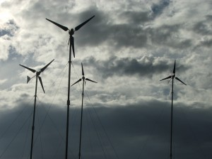

Noticias
Aneel propõe regulamentação para microgeração de energia com fontes renováveis
Consumidores poderão descontar energia gerada das contas; agência também estabelece desconto de 80% na Tust para usinas solares de até 30MW

A Agência Nacional de Energia Elétrica (Aneel) apresentou nesta terça-feira (9/8) uma proposta para regulamentar a
microgeração de energia incentivada na rede. A ideia é possibilitar aos consumidores a utilização de fontes renováveis,
como mini turbinas eólicas e painéis fotovoltaicos. Quem fizer a opção, terá direito a descontos na conta proporcionais à
produção própria. O órgão regulador também busca alavancar as usinas solares no País e, para isso, pretende aumentar dos atuais
50% para 80% o desconto na Tust e na Tusd – tarifas de transmissão e distribuição – para as plantas fotovoltaicas e termossolares
de até 30MW. Essa mudança seria válida nos dez primeiros anos de operação, com as taxas retornando aos 50% após esse período.
As ideias foram apresentadas em relatório do diretor Romeu Rufino e, após votação na reunião da diretoria colegiada da agência,
colocadas em processo de audiência pública. A minuta de regulamentação receberá contribuições entre 11 de agosto e 14 de outubro,
e contará ainda com uma sessão presidencial em 6 de outubro.
Pela proposta da Aneel, seria criado um Sistema de Compensação de Energia, por meio do qual o
consumidor com geração distribuída e a distribuidora poderiam trocar energia. O mecanismo, porém, não prevê
nenhuma transação financeira. Caso um microgerador produza mais do que consumiu, o montante extra pode ser acumulado
e abatido nos meses seguintes. Esse crédito teria validade de doze meses.
“Trata-se de um sistema simples de ser implantado pelas distribuidoras, não oneroso para os demais consumidores,
no sentido de que não envolve a aplicação de subsídios, e também capaz de viabilizar a geração distribuída”, afirma
o diretor Rufino, em seu relatório. De acordo com ele, a proposta também é “uma ação de eficiência energética, pois haverá
redução de consumo e do carregamento dos alimentadores em regiões com densidade alta de carga, com redução de perdas e, em
alguns casos, postergação de investimentos na expansão do sistema de distribuição”.
A coleta de informações junto às unidades geradoras, envio de fichas técnicas e declaração de operação
das plantas serão de responsabilidade das concessionárias de distribuição, que também terão de emitir parecer de acesso,
realizar vistoria e liberar a conexão dos microprodutores à rede. Estudos elétricos e operacionais para integração à rede
também deverão ser feitos pela distribuidora, sem ônus para o consumidor.
Serão considerados empreendimentos de minigeração aqueles com potência entre 100kW e 1MW conectados
diretamente à rede, em qualquer tensão, ou através de unidades consumidoras, podendo operar em paralelo ou de
forma isolada, sem despacho pelo Operador Nacional do Sistema (ONS). A microgeração, por sua vez, contempla centrais com
até 100kV.
A Aneel também coloca na regulamentação a possibilidade de que os geradores passíveis de registro junto à agência sejam
colocados como autoprodutores sem a necessidade de contabilização direta na Câmara de Comercialização de Energia Elétrica (CCEE),
uma vez que a complexibilidade e o custo de ser representado na CCEE inviabilizaria os empreendimentos. Com isso, as distribuidoras
poderão fazer a contabilidade dos autoprodutores com potência instalada de até 1MW e carga em ponto distinto. A única exigência é
que ambas unidades consumidoras tenham o mesmo titular e sejam atendidas pela mesma concessionária.
Caso a proposta seja aprovada, após a consulta pública, as distribuidoras terão até 180 dias após a publicação da resolução
para elaborar ou revisar normas técnicas para tratar do acesso a minigeração e microgeração distribuída por fontes incentivadas.
Deverão ser utilizadas como referência o Prodist, as normas técnicas brasileiras e, de forma complementar, as normas internacionais.